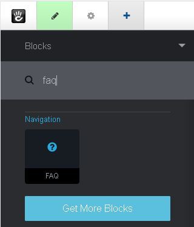
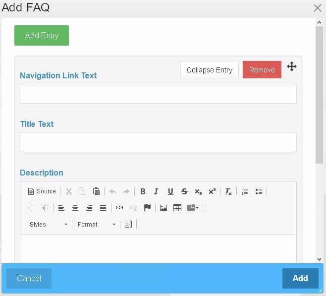
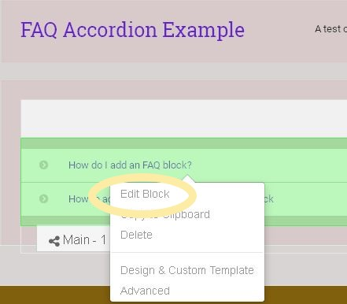
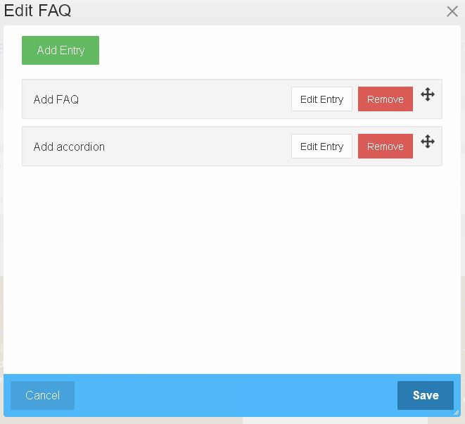
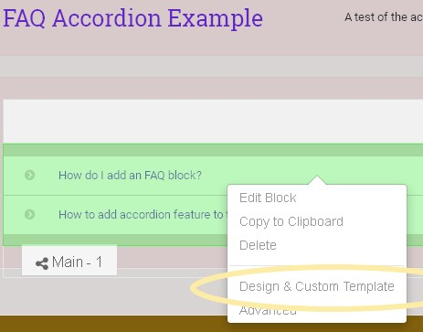
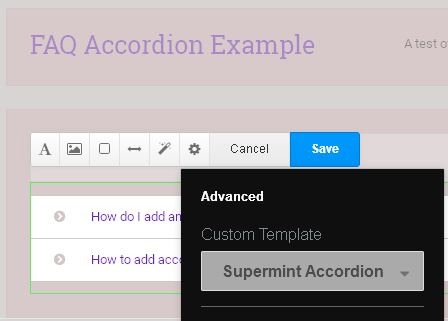

Blocks, FAQ accordion
Supermint can display frequently asked questions as an accordion.
Adding an FAQ block
- Reference the concrete5
add a block
documentation. In the Navigation section choose the FAQ block.
- Drag and drop the block onto the intended area.

- A modal pops up automatically, to create the first entry for the FAQ block.

Editing an FAQ block
- Reference the concrete5
in page editing
documentation.
- Click on the FAQ block to begin editing.
- In the pop up menu click on Edit block.

- A modal will allow adding, removing, editing and reording questions.

Adding an accordion to the FAQ block
- Reference the concrete5
in page editing
documentation.
- Click on the FAQ block to begin editing.
- Choose the Design and Custom Template option in the pop up menu.

- Then choose the gear icon in the edit menu bar.
- In Custom Template there is one choice for Supermint Accordion that can
be selected.
